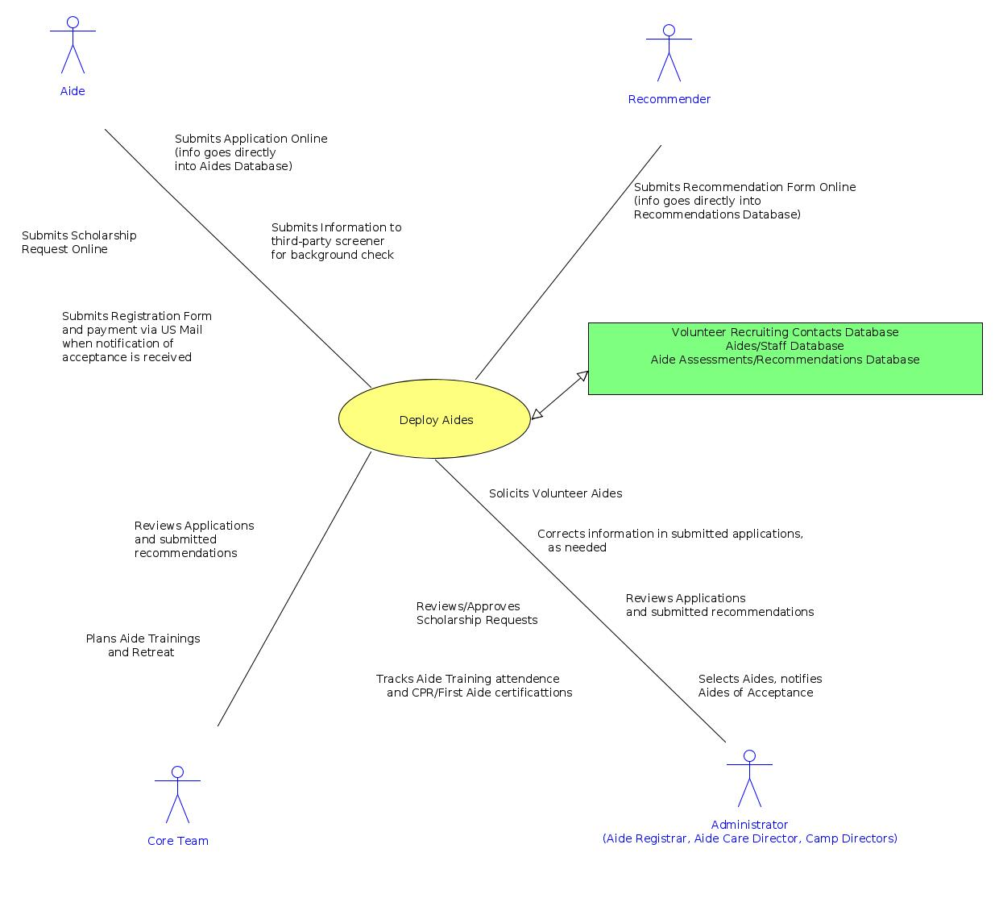

CAMP ADMINISTRATION INFORMATION SYSTEMUSE CASES

-
Use Case:
Safely Administer Medications
-
Goal:
Create a detailed medication schedule for each camper
to be used by Health Supervisors, Cabin Leads,
LA Bus Captain,
Administrators and Guardians.
-
Related Databases:
Campers Database
Meds Database
Med Admin Schedules Database
- Actions:
-
Guardian fills out detailed forms for Camper
and submits to Administrator.
These forms include medication information if required for the camper.
-
Administrator enters the personal information of
the Camper into the Campers Database.
-
Health Supervisor enters the specification of each medication
required by the Camper into the Meds Database and the Campers Database.
-
Based upon the Meds Database and the Campers Database,
the Health Supervisor creates entries in the Med Admin Schedules Database.
This database determines the schedule for administering medications to each camper.
Health Supervisor determines if the medication is to be administered
by the Care Group Lead or by the Health Supervisor.
-
As needed, the Health Supervisor prints the Med Admin Schedules Database
and distributes relevant pages to the Health Supervisors, Care Group Leads,
LA Bus Captain, and Guardians.
-
At the start of camp, Guardian brings medications to Health Supervisors
and signs a printout confirming that the medication schedule for the Camper is correct.
-
During the camp week, Health Supervisors and Care Group Leads administer medications
according to the schedule determined by the Med Admin Schedules Database.
Health Supervisors and Care Group Leads keep audit records of administered meds.
-
During the LA bus trip, the LA Bus Captain administers medications
according to the schedule determined by the Med Admin Schedules Database.
LA Bus Captain keeps audit records of administered meds.
-
At the end of the camp week, Health Supervisors returns leftover medications
to the Guardian who signs receipt..

-
Use Case:
Deploy Aides
-
Goal:
Solicit, train, and deploy aides to perform the challenging
tasks related to the care and nurture of campers.
-
Related Databases:
Volunteer Recruiting Contacts Database
Aides/Staff Database
Aide Assessments/Recommendations Database
Staff Responsibilities Database
- Actions:
-
Camp Administrator coordinates volunteers to inform churches of the
camp ministry and need for aide volunteers. The Volunteer Recruiting Contacts Database is
used to facilitate this activity.
-
Aide submits an application to be considered as an aide volunteer for the coming
camp week.
-
Recommender fills online form and submits.
-
Database Administrator enters the aide information into the Aides/Staff Database
and the recommendation into the Aide Assessments/Recommendations Database.
-
Camp Administrator reviews aide applications and selects candidates.
-
Camp Administrator coordinates training sessions for new and experienced
aides and coordinates retreat weekend.
-
Aide volunteers for tasks to be performed during camp week.
-
Camp Administrator assigns aides to tasks using the Staff Responsibilities Database.
-
During camp week, Aide cares for campers and fulfills assigned tasks.

-
Use Case:
Organize Camp Activities
-
Goal:
Plan and schedule camp activities, assign aides and campers to care groups.
Post camp receive feedback and recommendations.
-
Related Databases:
Housing Resources Database
Care Groups Database
Improvement Idea/Suggestion Database
- Actions:
-
Camp Administrator plans and schedules camp activities.
-
Camp Administrator assigns aides and campers to care groups by creating the
Housing Resources Database and the Care Groups Database.
-
Camp Administrator supervises camp week.
-
Camper participates in camp activities.
-
After camp week, Aide provides feedback and recommendations using
online form. Administrator enters recommendations
into the Improvement Idea/Suggestion Database.